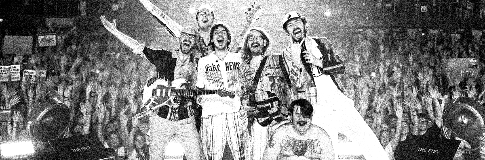

Il Concerto del Primo Maggio è il più grande evento gratuito di musica dal vivo in Europa. Nato nel 1990, l'evento è promosso da CGIL, CISL e UIL e viene organizzato annualmente a Roma, richiamando centinaia di migliaia di spettatori. Il Concerto viene anche trasmesso integralmente in diretta da RAI 3 e RAI Radio2. Una maratona musicale, un programma televisivo e un evento di piazza allo stesso tempo, con la pretesa di accontentare tutti pur mantenendo alta la qualità e con uno sfondo di contenuti sociali sempre presente e vivido.
La particolarità del binomio Tv/Piazza è in assoluto l'aspetto più affascinante di un evento che, forte di ben tre decenni di storia a tratti leggendaria, abbraccia ancora oggi un target di pubblico incredibilmente vasto e variegato. La trasversalità artistica si traduce quindi in una varietà di pubblico che non ha eguali negli eventi musicali italiani, un format che riesce nell'impresa di coinvolgere tanto l'adolescente che balla sotto il palco, quanto lo spettatore più adulto comodamente seduto davanti alla televisione di casa. Questa è la vera forza e l'assoluta peculiarità del Concerto del Primo Maggio di Roma.
Angelica Bove • Bambole di Pezza • Birthh • Casadilego • Chiello • Dardust con Davide Rossi • Delia • Ditonellapiaga • Dolcenera • Dutch Nazari • Eddie Brock • Emma • Emma Nolde • Ermal Meta • Frah Quintale • Francamente • Francesca Michielin • Fulminacci • Geolier • Irama • La NIÑA • Lea Gavino • Levante • Litfiba • Madame • Maria Antonietta & Colombre • Ministri • Mobrici • Niccolò Fabi • Nico Arezzo • okgiorgio • Orchestra Popolare La Notte della Taranta • Paolo Belli • Pinguini Tattici Nucleari • Primogenito • Riccardo Cocciante • rob • Rocco Hunt • Roshelle • Santamarea • Sayf • Senza Cri • Serena Brancale • Silvia Salemi • Sissi

Divieti di fermata sono già in vigore su piazza di Porta San Giovanni
Dalle ore 14 del 30 aprile si estenderanno a:
via Emanuele Filiberto
viale Carlo Felice
via Umberto Biancamano
via Ludovico di Savoia
via Domenico Fontana e piazza San Giovanni
Per lo svolgimento del concerto sarà chiusa al traffico l'area compresa tra via Carlo Felice, piazza di Porta San Giovanni, via Emanuele Filiberto
Durante le chiusure resteranno transitabili le direttrici:
Amba Aradam - San Giovanni in Laterano - Merulana
Nola - Santa Croce in Gerusalemme
Magna Grecia - Appio - Appia - La Spezia
Trasporto pubblico:
deviate da inizio servizio le linee bus 16, 51, 81, 85, 87, 360, 590, 792
deviate le linee bus notturne nMA, n3d, n3s, nMc per consentire gli interventi di Ama dopo il concerto (l'area resterà chiusa sino alle prime ore del 2 maggio)